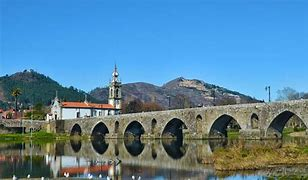

Ponte de Lima encanta o olhar de qualquer um!!!
Conhecida por sua história e beleza, Paris é um destino mundialmente famoso. Explore os detalhes sobre a cidade na Wikipédia: Wikipédia.
Ponte de Lima é um lugar onde o tempo parece ter parado, abraçando a tradição e a natureza em uma harmonia perfeita. Ao caminhar pelas ruas de pedra, cercadas por casas antigas e monumentos históricos, é impossível não se perder na beleza e na história deste lugar. A ponte romana, que atravessa majestosa o rio Lima, testemunhou séculos de histórias e lendas que ecoam em cada canto da vila. Os campos verdes, as vinhas e os jardins floridos convidam à contemplação, enquanto os sabores da gastronomia local nos levam a uma viagem aos prazeres simples da vida. Em Ponte de Lima, o presente se encontra com o passado em uma celebração constante da cultura, da paisagem e da alma portuguesa. É um lugar que nos lembra da importância de viver cada momento com calma e gratidão.
Ponte de Lima é mais do que uma vila, é uma experiência para os sentidos. Desde o murmúrio suave do rio Lima, que reflete o brilho do sol em suas águas tranquilas, até o aroma das flores que enchem as ruas de cores e vida, tudo ali inspira tranquilidade e renovação. As festividades tradicionais, como as Feiras Novas, celebram a alegria e o espírito comunitário, mantendo viva a cultura e a identidade locais. E em meio a tudo isso, o verde das paisagens montanhosas nos convida a uma pausa, a respirar profundamente e a nos reconectar com a natureza. Caminhar por Ponte de Lima é mergulhar num mundo onde a história, a beleza e a simplicidade se entrelaçam, lembrando-nos de que a verdadeira riqueza está em apreciar as pequenas coisas que nos cercam.